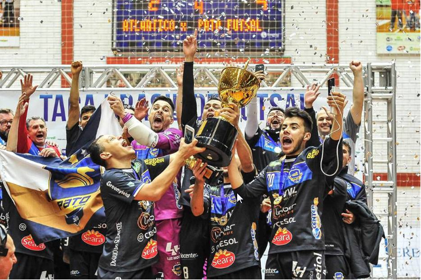

O Pato Futsal é o novo campeão da Taça Brasil de Clubes. Neste domingo, a equipe paranaense venceu o Atlântico Erechim, na prorrogação, por 4 a 2, na casa do rival, para conquistar o título inédito em sua história. A façanha veio com a presença do goleiro-linha em quadra, que fez a diferença quando o time estava em desvantagem de 2 a 1 no tempo extra e com a necessidade de vencer para ser campeão.
Em um jogo travado por causa da forte marcação, as chances claras de gol foram raras. Cabreúva acertou a trave com quatro minutos de jogo. No entanto, o placar só foi saiu do zero faltando dois minutos para terminar o primeiro tempo. Silva completou cobrança de escanteio de Café para fazer 1 a 0 para o Atlântico Erechim.

O Pato Futsal ainda respondeu na sequência com uma bola na trave de Gouvea. Mas a reação do time demorou a acontecer e veio com a colaboração do goleiro Djony a sete minutos do fim do segundo tempo. Depois de evitar o segundo gol do Atlântico Erechim ao defender um chute de Wilsinho cara a cara, ele deu o passe para Danilo Baron, de letra, tocar por entre as pernas de Careca e empatar o jogo.
Na prorrogação, o Atlântico Erechim carregou a vantagem do empate por ter melhor campanha na primeira fase. No entanto, o time foi atrás do resultado e conseguiu um belo gol logo no começo do primeiro tempo extra. Cabreúva cruzou e Jé acertou um voleio para fazer 2 a 1.
Na semifinal, o Pato Futsal já havia superado um rival com a vantagem do empate. Atrás no placar, o time colocou em quadra Robério como goleiro-linha. A pressão deu certo. Ainda no primeiro tempo extra, Well empatou e esquentou de vez os cinco minutos finais da decisão do título.
No segundo tempo extra, o Pato Futsal teve uma grande chance com menos de 30 segundos de jogo, mas Cabreúva salvou. Com a necessidade de vencer, o time apostou em Baron como goleiro-linha no lugar de Robério. E funcionou. Rapidamente, Baron encontrou Robério dentro da área para virar.
O Pato Futsal passou a ser o dono do jogo. Em uma grande troca de passes, Dudu aumentou a vantagem para 4 a 2 a três minutos do fim, somando o placar do tempo normal e da prorrogação. O Atlântico Erechim, então, precisou correr atrás de dois gols e colocou Cabreúva como goleiro-linha. Mas não teve a eficiência do rival.
A Taça Brasil de Clubes deste ano contou ainda com a participação ainda de Joinville-SC, Minas Tênis Clube-MG, Horizonte-CE, Sorocaba-SP, Assoeva-RS, Constelação-RR, Portuguesa-RJ e Cruzeiro-RN.